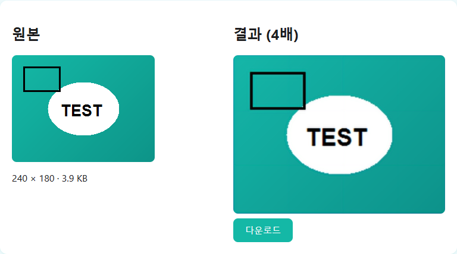

IMAGE TOOLBOX / GUIDE
AI 업스케일링, 실제로 되는 것과 안 되는 것
과장된 광고 문구가 아니라, 이 기술이 실제로 하는 일을 정직하게 설명합니다.
AI 업스케일링이 하는 일
이 사이트의 업스케일링 기능은 ESRGAN 계열의 경량 AI 모델을 브라우저 안에서 직접 실행합니다. 이 모델은 수많은 이미지를 학습하면서 "이런 저해상도 패턴은 보통 이런 고해상도 디테일에서 왔다"는 통계적 패턴을 익힌 상태입니다. 확대할 때 이 학습된 패턴을 참고해서 경계와 질감을 그럴듯하게 채워 넣기 때문에, 단순히 픽셀을 늘리는 것보다 훨씬 선명한 결과가 나옵니다.
AI 업스케일링이 할 수 없는 일
중요한 건, 이 과정이 원본에 없던 진짜 정보를 만들어내는 것이 아니라는 점입니다. AI는 "그럴듯한 디테일"을 추론해서 채우는 것이지, 사라진 원본 정보를 정확히 복원하는 것이 아닙니다. 그래서 다음과 같은 상황에서는 한계가 뚜렷합니다.
초점이 심하게 나간 사진 — 흔들리거나 초점이 안 맞아 형체 자체가 뭉개진 사진은 AI가 추론할 단서 자체가 부족해서 개선 폭이 작습니다.
극단적으로 작은 원본 — 원본이 너무 작아 픽셀 정보 자체가 거의 없는 경우, 확대해도 실제로 있었던 디테일이 아니라 AI가 그럴듯하게 지어낸 디테일에 가까워집니다.
인물 얼굴 "복원" — 이 기능은 사람 얼굴을 다른 각도나 더 젊은 모습으로 재구성하는 것이 아닙니다. 원본 사진에 있는 얼굴의 경계와 질감을 더 선명하게 다듬어주는 것이지, 없던 표정이나 디테일을 만들어내는 게 아닙니다.
언제 특히 효과적인가요
원본이 어느 정도 선명하지만 해상도만 낮은 경우(초점은 맞았는데 작게 찍힌 사진, 오래돼서 저해상도로만 남은 사진 등)에 가장 효과가 좋습니다. 이런 경우 AI가 참고할 실제 패턴 정보가 충분히 남아 있기 때문입니다.
배율은 무조건 높게 선택하는 게 좋은 것은 아닙니다. 원본이 이미 목표 크기에 가깝다면 2배로 충분하고, 원본이 아주 작을 때만 4배를 고려하는 것이 낫습니다. 배율이 커질수록 AI가 추론해서 채우는 비중이 늘어나기 때문에, 필요한 만큼만 확대하는 것이 원본에 더 가까운 결과를 얻는 방법입니다.

이미지 업스케일링에서 직접 확대해보고 결과를 확인해보세요.
자주 묻는 질문
흐릿한 사진을 선명하게 "복원"할 수 있나요?
어느 정도 개선은 되지만, 완전히 사라진 디테일을 원본 그대로 되살리는 것은 아닙니다. 흔들림이 심하거나 초점이 크게 나간 사진은 개선 폭이 제한적입니다.
몇 배까지 확대해야 자연스러운가요?
원본 해상도와 내용에 따라 다릅니다. 이 도구는 최대 4배(2배씩 두 번)까지 지원하며, 배율이 높아질수록 AI가 추론하는 비중이 커집니다.
사람 얼굴도 다른 AI 도구처럼 재구성해주나요?
아니요. 이 기능은 얼굴을 다른 모습으로 재구성하지 않습니다. 원본에 있는 경계와 질감을 더 선명하게 다듬는 역할만 합니다.
그림이나 일러스트에도 효과가 있나요?
네, 적용은 됩니다. 다만 이 모델은 사진 위주로 학습된 경향이 있어서, 선이 뚜렷한 일러스트에서는 경계가 사진과는 다른 느낌으로 부드러워질 수 있습니다. 사진만큼 자연스러운 결과가 안 나올 수 있다는 점을 감안하세요.
여러 번 반복해서 업스케일하면 더 좋아지나요?
아닙니다. 이 도구의 4배 확대는 이미 내부적으로 2배씩 두 번(총 2회) AI 처리를 거칩니다. 결과물을 다시 업로드해서 또 확대하면 새로운 정보가 생기는 게 아니라, 이미 추론된 디테일 위에 추론을 한 번 더 얹는 것이라 오히려 부자연스러운 번짐이 늘어날 수 있습니다.
처리 시간은 얼마나 걸리나요?
이미지 크기와 사용하는 기기 성능에 따라 다릅니다. 모든 연산이 브라우저 안에서 이루어지기 때문에 성능이 낮은 기기에서는 시간이 더 걸릴 수 있습니다.